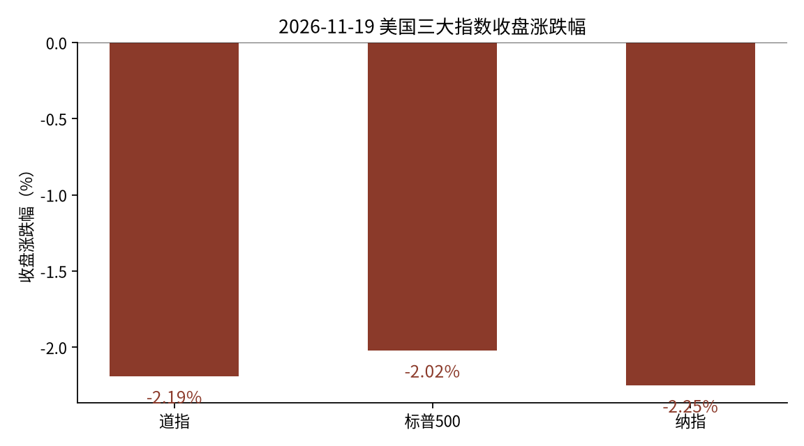

热闹是新股的，指数却在开盘那一刻跌到了最低：Anthropic 一开始交易，三大指数就走到当天低点
CNBC写，三大指数在Anthropic开始交易的那一刻跌至当日低点。道指收49097.06点，跌1101.11点，跌幅2.19%，为6月以来首次收在50000下方；标普500收7175.83点，跌2.02%；纳指收23879.20点，跌2.25%，盘中一度涨约2%。
新股开盘，按老剧本，周围的科技股也会跟着热闹一会儿。11月19日不是这个顺序。CNBC写，三大指数在Anthropic开始交易的那一刻，跌到了当天最低。
同一天里，纳指盘中一度涨约2%，收盘却跌2.25%，收在23879.20点。标普500收7175.83点，跌2.02%。道指收49097.06点，跌1101.11点，跌幅2.19%，是6月以来第一次收在50000点下方。Anthropic开盘111.50美元，较发行价83美元高出约34%；收盘97.17美元，仍较发行价高约17%，但比第一笔成交价低约13%。
新股第一天可以自己高开，大盘却收在当天低点附近。两件事发生在同一窗口里，不能把IPO的涨幅读成「AI交易已经被救回来了」。
三个指数当天怎么收
| 指数 | 收盘 | 涨跌幅 | 补充 |
|---|---|---|---|
| 道琼斯工业平均指数 | 49097.06 | −2.19%（−1101.11点） | 6月以来首次收在50000下方 |
| 标普500 | 7175.83 | −2.02% | Kitco写：连跌六个交易日 |
| 纳斯达克综合指数 | 23879.20 | −2.25% | 盘中一度涨约2% |

芝加哥期权交易所的波动率指数VIX，在Anthropic开始交易后不久升到接近29，为3月以来最高；随后仍留在28上方。CNN恐惧贪婪指数使用的数据集，把11月19日VIX收盘写成28.24，和「留在28上方」相符。
早盘并不是一开始就跌。CNBC写，Anthropic把发行价定在83美元、高于此前预期区间之后，芯片股和其他AI相关股票上午先涨，随后把涨幅吐掉。英伟达和美光放弃了早盘涨幅。Hunterbrook Capital披露对该股的空头，并指称涉及对华出口管制违规之后，AMD下跌近8%。⚠️ 这是做空方的指控，不是已经证实的违法事实。
开盘为什么会变成卖出的理由
Bogart Wealth首席投资官亚历克斯·斯宾塞对CNBC说，这本来就会是科技板块的一次关键考验，「这里有很多东西需要消化，也就变成了这段不确定和波动。」他还说，热情进来的时候，反而是卖出反弹、兑现利润的好时机。
Baird科技策略师特德·莫顿森则把当天Anthropic的交易比成赌场，并说「今天并不重要」，真正决定估值的是接下来三年怎么走。一句话不能当作预测，但它提醒了一件事：把首日开盘当成板块已被验证，理由并不充分。
CNBC还补充了更大的背景：iShares AI Innovation and Tech Active ETF（BAI）本月已下跌近14%；CoreWeave本月下跌18%，其债券收益率本月早些时候一度高于16%。同一段里，CNBC还写英伟达已下跌28%，当时公司正面对首席执行官黄仁勋辞职，但没有写明这是不是月内跌幅。这些背景有助于理解当天的压力，但都不是单看19日收盘就能得出的新结论。
同一天的顺序值得再走一遍。上午，发行价高于此前预期区间的消息先到，芯片股和其他AI相关股票被写成上涨。CNBC的收盘稿把三大指数跌到当日低点，写在Anthropic开始交易的那一刻；盘中更新则写成，开始交易后几乎立刻触及当时的盘中低位。这是时间上的先后，现有公开报道还不能证明是新股开盘导致了抛售。收盘时，三大指数留在低点附近。新股自己的轨迹是另一条线：开盘高于发行价，收盘仍高于发行价，但已经离开第一笔成交价。板块里的股票、新上市的这一只、以及用来衡量紧张程度的VIX，并没有走成同一个方向。
Kitco下午报告把标普500写成连跌六个交易日。这只说明已经连续六个交易日收阴，并不等于这六天的跌幅可以加总，本文也不另算一笔总跌幅。
X上怎么看新股高开和指数收跌
时间线上，有人把开盘34%的跳空写成「AI还在赢」。陈一发儿在美东上午10点41分、也就是收盘前，就把当时的高开低走写成「美股A股化」；这是盘中评论，不是收盘后的总结。还有人问当天还要不要买ANT，回答并不一样。出口管制和AMD做空报告，则把芯片股从「IPO的配角」变成了单独的风险讨论。
比较清楚的只有一层：Anthropic自己高开了，大盘没有因此转强。至于这是一次利好出尽，还是更长下跌里的一天，时间线上没有一致判断，也不该用转发里的「蒸发」数字来补。
新股高开没有把大盘拉回来
能确定的是：三大指数收在低位，道指收在5万点下方；Kitco还写标普500连跌六个交易日。CNBC把最低点和Anthropic开始交易写在一起，但这仍是时间先后，不是已经证明的因果关系。不能确定的是，这已经把「卖出消息」做完了，还是更长调整的中段。
把新股高开读成整个AI交易已经被验证，理由并不够。后面更值得看的，是指数在新股上市之后是否继续走弱，以及芯片股是否还按早盘那一波来定价。VIX若很快回到低位，当天的紧张更像一次脉冲；若留在高位，19日更像是压力被重新定价的一天。
免责声明：本文内容仅供信息分享，指数与个股价格转述自公开报道，不构成任何投资建议。
X 上怎么看
结论 · 新股高开和三大指数收在低点，是同一天里已经发生的两件事。CNBC把最低点的时间和开盘写在一起。不能把ANT的涨幅读成AI交易已被救回。AMD近8%的下跌与做空报告同时出现，指控本身尚未被证实。
▲ 看多1 位
▼ 看空4 位
观点为 X 用户当日公开帖子的中文摘要，忠于原文但有删减；标「未核实」的为预测、个人推测或单一来源说法。立场为人工判断。
数据来源
- 三大指数收盘价与涨跌幅、道指6月以来首次收在50000下方、纳指盘中一度涨约2%、三大指数在Anthropic开始交易的那一刻跌至当日低点、上午因发行定价先涨后回吐、英伟达和美光放弃早盘涨幅、AMD下跌近8%及Hunterbrook做空披露，均来自CNBC 11月19日市场报道。
- 标普500连续第六个下跌交易日，来自Kitco 11月19日下午报告（extending its losing streak to six sessions）。本稿核过的CNBC市场报道正文未写明「六连跌」，故不把这一说法记在CNBC名下。
- VIX盘中接近29、为3月以来最高、随后留在28上方，来自CNBC。CNN恐惧贪婪数据集里的11月19日VIX收盘为28.24，用来说明「留在28上方」，不是另报一个盘中高点。
- BAI本月近14%、CoreWeave本月下跌18%、债券收益率早些时候高于16%，以及斯宾塞、莫顿森的评论，均来自同一篇CNBC市场报道，作为背景而不是19日收盘的新计算结果。英伟达已下跌28%、并面对黄仁勋辞职，也出自同一段，但原文未写明这是月内跌幅。
- 道指11月19日公开行情为：开盘50432.32，最高50454.81，最低49091.92，收盘49097.06（Investing.com、exa.ai 与 Investor's Business Daily 当日表一致；MDJ 市场综述 PDF 亦写 High 50,454.81、Low 49,091.92）。高低点相差约2.70%。IBD 另写距52周高点约-10.3%。CNBC收盘稿写过「一度较当日高点回落10%」，与当日高低点冲突，正文不用这个10%。
- Anthropic开盘111.50美元、收盘97.17美元、发行价83美元，来自CNBC上市直播更新，用来对照「新股高开、指数收在低点」。
- Hunterbrook的出口管制主张是做空方指控，正文已标明，不是已证实违法。